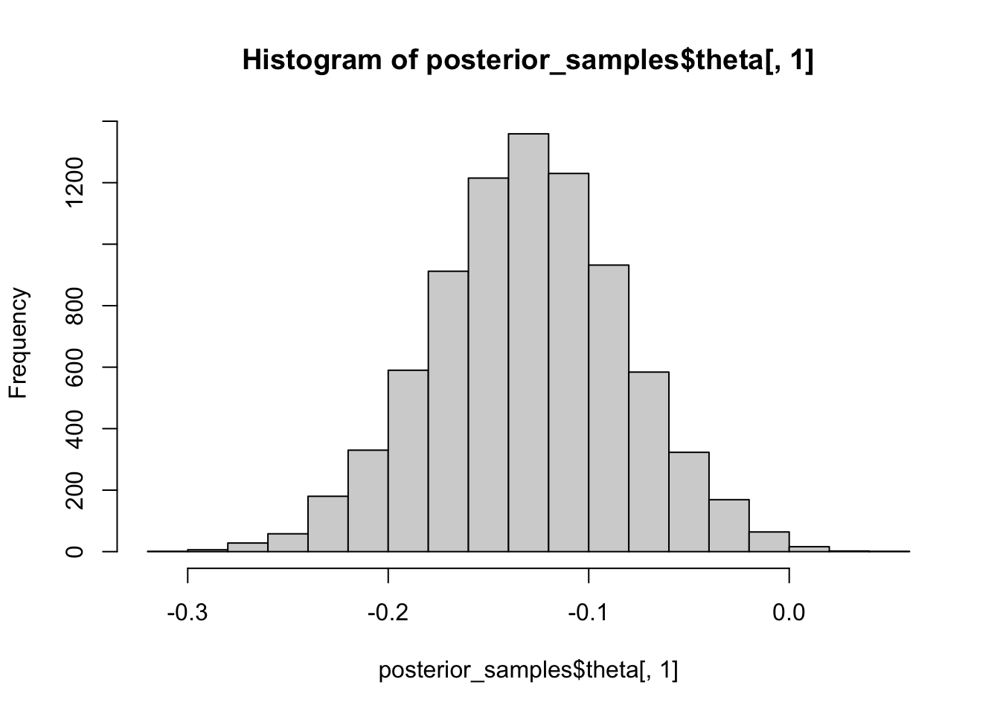
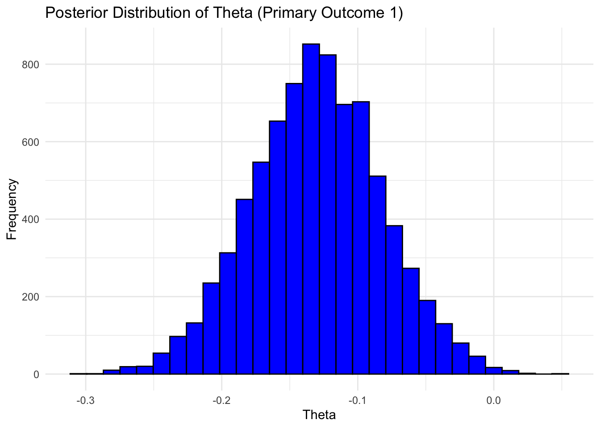
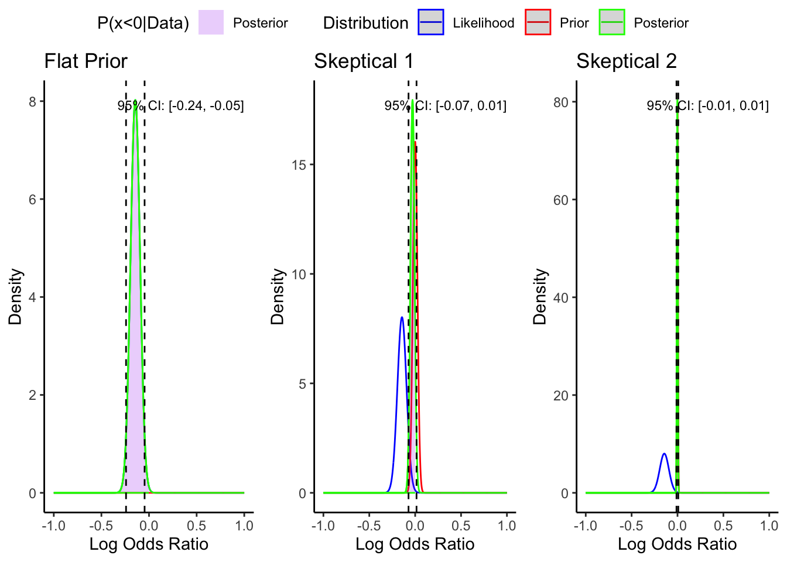
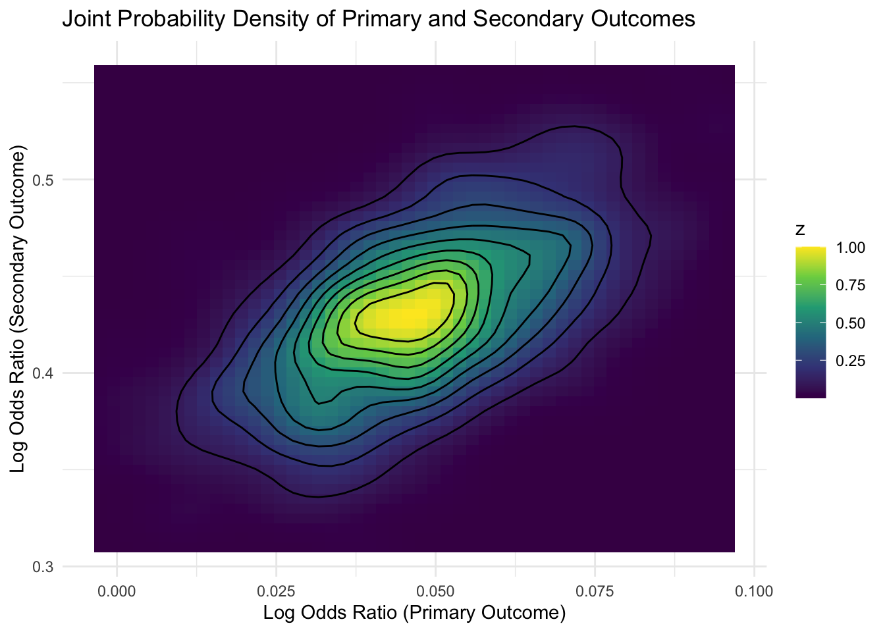
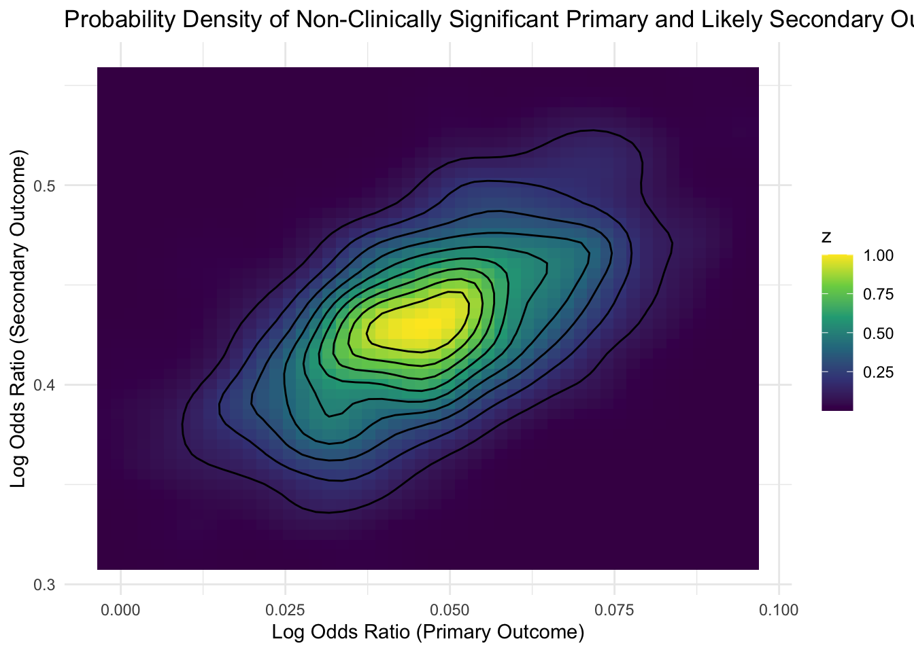

Last updated: 2024-01-02
Checks: 6 1
Knit directory: bayesclinical/
This reproducible R Markdown analysis was created with workflowr (version 1.7.1). The Checks tab describes the reproducibility checks that were applied when the results were created. The Past versions tab lists the development history.
The R Markdown file has unstaged changes. To know which version of
the R Markdown file created these results, you’ll want to first commit
it to the Git repo. If you’re still working on the analysis, you can
ignore this warning. When you’re finished, you can run
wflow_publish to commit the R Markdown file and build the
HTML.
Great job! The global environment was empty. Objects defined in the global environment can affect the analysis in your R Markdown file in unknown ways. For reproduciblity it’s best to always run the code in an empty environment.
The command set.seed(20240101) was run prior to running
the code in the R Markdown file. Setting a seed ensures that any results
that rely on randomness, e.g. subsampling or permutations, are
reproducible.
Great job! Recording the operating system, R version, and package versions is critical for reproducibility.
Nice! There were no cached chunks for this analysis, so you can be confident that you successfully produced the results during this run.
Great job! Using relative paths to the files within your workflowr project makes it easier to run your code on other machines.
Great! You are using Git for version control. Tracking code development and connecting the code version to the results is critical for reproducibility.
The results in this page were generated with repository version fadd433. See the Past versions tab to see a history of the changes made to the R Markdown and HTML files.
Note that you need to be careful to ensure that all relevant files for
the analysis have been committed to Git prior to generating the results
(you can use wflow_publish or
wflow_git_commit). workflowr only checks the R Markdown
file, but you know if there are other scripts or data files that it
depends on. Below is the status of the Git repository when the results
were generated:
Unstaged changes:
Modified: analysis/clear.Rmd
Note that any generated files, e.g. HTML, png, CSS, etc., are not included in this status report because it is ok for generated content to have uncommitted changes.
These are the previous versions of the repository in which changes were
made to the R Markdown (analysis/clear.Rmd) and HTML
(docs/clear.html) files. If you’ve configured a remote Git
repository (see ?wflow_git_remote), click on the hyperlinks
in the table below to view the files as they were in that past version.
| File | Version | Author | Date | Message |
|---|---|---|---|---|
| html | 82ab964 | Sarah Urbut | 2024-01-01 | Update |
| Rmd | 7ad8b8a | Sarah Urbut | 2024-01-01 | Update |
| Rmd | 4bd3a2a | Sarah Urbut | 2024-01-01 | Update |
| Rmd | 3035caa | Sarah Urbut | 2024-01-01 | update |
In the CLEAR outcome trial, the aim was to find a clinically meaninful difference on MACE using Bempedoic Acid in statin-intolerance patients.
Let’s first compare the primary outcomes (found significant) using a unimodal Normal shrinkage prior. We take advantage that the logOR is approximately normally distributed, and that the normal distribution has a conjugate (normal) prior. This means that the Posterior and Prior take the same form, and in the case of the normal distribtuion, so does the likelihood!
First let’s plot the primary outcomes under a flat (N(0,1e6)) prior which approaches the frequentist analysis, and two skeptical (small ^2) prior.
We can see that under the flat prior analysis, the credible interval should approach the confidence intervalWith increasinly skeptical priors, we become less confident that the effect is truly non 0
We use the empircal bayes normal mean here, namely that all distributions center around a mean of 0, and allow the confidence in the error (the ‘spike or slab’) to determine the amount of skepticism (shrinkage).
For the flat prior, we see the results are identical to table 1:
mu1 sigma1 p(logOR<0|data)
Primary Outcome 1 -0.14383088 0.04972039 0.9980908
Primary Outcome 2 -0.15842791 0.05959672 0.9960736
Primary Outcome 3 -0.25963011 0.08194150 0.9992338
Primary Outcome 4 -0.21225050 0.06253239 0.9996559
Primary Outcome 5 -0.16273081 0.11942470 0.9134993
Primary Outcome 6 0.04533776 0.08748751 0.3021525
Primary Outcome 7 0.03278982 0.06910202 0.3175670For the skeptical prior 1, where we are twice as confident in the prior (with mass at exactly 0) then the data, we see a mean closer to no difference (logOR of 0)
mu1 sigma1 p(logOR<0|data)
Primary Outcome 1 -0.028766175 0.02223563 0.9021150
Primary Outcome 2 -0.031685582 0.02665246 0.8827492
Primary Outcome 3 -0.051926023 0.03664535 0.9217568
Primary Outcome 4 -0.042450100 0.02796533 0.9354870
Primary Outcome 5 -0.032546162 0.05340835 0.7288648
Primary Outcome 6 0.009067553 0.03912561 0.4083642
Primary Outcome 7 0.006557965 0.03090336 0.4159721For the skeptical prior 2, where we are ten time as confident in the prior (with mass at exactly 0) then the data, we see a mean almost at exactly no difference (logOR of 0)
mu1 sigma1 p(logOR<0|data)
Primary Outcome 1 -0.0014240681 0.004947364 0.6132669
Primary Outcome 2 -0.0015685932 0.005930095 0.6043081
Primary Outcome 3 -0.0025705952 0.008153484 0.6237238
Primary Outcome 4 -0.0021014901 0.006222205 0.6322206
Primary Outcome 5 -0.0016111961 0.011883202 0.5539257
Primary Outcome 6 0.0004488888 0.008705333 0.4794377
Primary Outcome 7 0.0003246517 0.006875908 0.4811706We can also use a MCMC distribution:
Here, we use a cauchy prior for , the sd of the prior, and then choose
~ cauchy(0, 2.5); ~ normal(0, ); // Priors for theta logOR ~ normal(, SE); // Likelihood
Running /Library/Frameworks/R.framework/Resources/bin/R CMD SHLIB foo.c
using C compiler: ‘Apple clang version 15.0.0 (clang-1500.1.0.2.5)’
using SDK: ‘MacOSX14.2.sdk’
clang -arch arm64 -I"/Library/Frameworks/R.framework/Resources/include" -DNDEBUG -I"/Library/Frameworks/R.framework/Versions/4.3-arm64/Resources/library/Rcpp/include/" -I"/Library/Frameworks/R.framework/Versions/4.3-arm64/Resources/library/RcppEigen/include/" -I"/Library/Frameworks/R.framework/Versions/4.3-arm64/Resources/library/RcppEigen/include/unsupported" -I"/Library/Frameworks/R.framework/Versions/4.3-arm64/Resources/library/BH/include" -I"/Library/Frameworks/R.framework/Versions/4.3-arm64/Resources/library/StanHeaders/include/src/" -I"/Library/Frameworks/R.framework/Versions/4.3-arm64/Resources/library/StanHeaders/include/" -I"/Library/Frameworks/R.framework/Versions/4.3-arm64/Resources/library/RcppParallel/include/" -I"/Library/Frameworks/R.framework/Versions/4.3-arm64/Resources/library/rstan/include" -DEIGEN_NO_DEBUG -DBOOST_DISABLE_ASSERTS -DBOOST_PENDING_INTEGER_LOG2_HPP -DSTAN_THREADS -DUSE_STANC3 -DSTRICT_R_HEADERS -DBOOST_PHOENIX_NO_VARIADIC_EXPRESSION -D_HAS_AUTO_PTR_ETC=0 -include '/Library/Frameworks/R.framework/Versions/4.3-arm64/Resources/library/StanHeaders/include/stan/math/prim/fun/Eigen.hpp' -D_REENTRANT -DRCPP_PARALLEL_USE_TBB=1 -I/opt/R/arm64/include -fPIC -falign-functions=64 -Wall -g -O2 -c foo.c -o foo.o
In file included from <built-in>:1:
In file included from /Library/Frameworks/R.framework/Versions/4.3-arm64/Resources/library/StanHeaders/include/stan/math/prim/fun/Eigen.hpp:22:
In file included from /Library/Frameworks/R.framework/Versions/4.3-arm64/Resources/library/RcppEigen/include/Eigen/Dense:1:
In file included from /Library/Frameworks/R.framework/Versions/4.3-arm64/Resources/library/RcppEigen/include/Eigen/Core:88:
/Library/Frameworks/R.framework/Versions/4.3-arm64/Resources/library/RcppEigen/include/Eigen/src/Core/util/Macros.h:628:1: error: unknown type name 'namespace'
namespace Eigen {
^
/Library/Frameworks/R.framework/Versions/4.3-arm64/Resources/library/RcppEigen/include/Eigen/src/Core/util/Macros.h:628:16: error: expected ';' after top level declarator
namespace Eigen {
^
;
In file included from <built-in>:1:
In file included from /Library/Frameworks/R.framework/Versions/4.3-arm64/Resources/library/StanHeaders/include/stan/math/prim/fun/Eigen.hpp:22:
In file included from /Library/Frameworks/R.framework/Versions/4.3-arm64/Resources/library/RcppEigen/include/Eigen/Dense:1:
/Library/Frameworks/R.framework/Versions/4.3-arm64/Resources/library/RcppEigen/include/Eigen/Core:96:10: fatal error: 'complex' file not found
#include <complex>
^~~~~~~~~
3 errors generated.
make: *** [foo.o] Error 1
SAMPLING FOR MODEL 'anon_model' NOW (CHAIN 1).
Chain 1:
Chain 1: Gradient evaluation took 1.5e-05 seconds
Chain 1: 1000 transitions using 10 leapfrog steps per transition would take 0.15 seconds.
Chain 1: Adjust your expectations accordingly!
Chain 1:
Chain 1:
Chain 1: Iteration: 1 / 4000 [ 0%] (Warmup)
Chain 1: Iteration: 400 / 4000 [ 10%] (Warmup)
Chain 1: Iteration: 800 / 4000 [ 20%] (Warmup)
Chain 1: Iteration: 1200 / 4000 [ 30%] (Warmup)
Chain 1: Iteration: 1600 / 4000 [ 40%] (Warmup)
Chain 1: Iteration: 2000 / 4000 [ 50%] (Warmup)
Chain 1: Iteration: 2001 / 4000 [ 50%] (Sampling)
Chain 1: Iteration: 2400 / 4000 [ 60%] (Sampling)
Chain 1: Iteration: 2800 / 4000 [ 70%] (Sampling)
Chain 1: Iteration: 3200 / 4000 [ 80%] (Sampling)
Chain 1: Iteration: 3600 / 4000 [ 90%] (Sampling)
Chain 1: Iteration: 4000 / 4000 [100%] (Sampling)
Chain 1:
Chain 1: Elapsed Time: 0.025 seconds (Warm-up)
Chain 1: 0.025 seconds (Sampling)
Chain 1: 0.05 seconds (Total)
Chain 1:
SAMPLING FOR MODEL 'anon_model' NOW (CHAIN 2).
Chain 2:
Chain 2: Gradient evaluation took 3e-06 seconds
Chain 2: 1000 transitions using 10 leapfrog steps per transition would take 0.03 seconds.
Chain 2: Adjust your expectations accordingly!
Chain 2:
Chain 2:
Chain 2: Iteration: 1 / 4000 [ 0%] (Warmup)
Chain 2: Iteration: 400 / 4000 [ 10%] (Warmup)
Chain 2: Iteration: 800 / 4000 [ 20%] (Warmup)
Chain 2: Iteration: 1200 / 4000 [ 30%] (Warmup)
Chain 2: Iteration: 1600 / 4000 [ 40%] (Warmup)
Chain 2: Iteration: 2000 / 4000 [ 50%] (Warmup)
Chain 2: Iteration: 2001 / 4000 [ 50%] (Sampling)
Chain 2: Iteration: 2400 / 4000 [ 60%] (Sampling)
Chain 2: Iteration: 2800 / 4000 [ 70%] (Sampling)
Chain 2: Iteration: 3200 / 4000 [ 80%] (Sampling)
Chain 2: Iteration: 3600 / 4000 [ 90%] (Sampling)
Chain 2: Iteration: 4000 / 4000 [100%] (Sampling)
Chain 2:
Chain 2: Elapsed Time: 0.025 seconds (Warm-up)
Chain 2: 0.032 seconds (Sampling)
Chain 2: 0.057 seconds (Total)
Chain 2:
SAMPLING FOR MODEL 'anon_model' NOW (CHAIN 3).
Chain 3:
Chain 3: Gradient evaluation took 2e-06 seconds
Chain 3: 1000 transitions using 10 leapfrog steps per transition would take 0.02 seconds.
Chain 3: Adjust your expectations accordingly!
Chain 3:
Chain 3:
Chain 3: Iteration: 1 / 4000 [ 0%] (Warmup)
Chain 3: Iteration: 400 / 4000 [ 10%] (Warmup)
Chain 3: Iteration: 800 / 4000 [ 20%] (Warmup)
Chain 3: Iteration: 1200 / 4000 [ 30%] (Warmup)
Chain 3: Iteration: 1600 / 4000 [ 40%] (Warmup)
Chain 3: Iteration: 2000 / 4000 [ 50%] (Warmup)
Chain 3: Iteration: 2001 / 4000 [ 50%] (Sampling)
Chain 3: Iteration: 2400 / 4000 [ 60%] (Sampling)
Chain 3: Iteration: 2800 / 4000 [ 70%] (Sampling)
Chain 3: Iteration: 3200 / 4000 [ 80%] (Sampling)
Chain 3: Iteration: 3600 / 4000 [ 90%] (Sampling)
Chain 3: Iteration: 4000 / 4000 [100%] (Sampling)
Chain 3:
Chain 3: Elapsed Time: 0.024 seconds (Warm-up)
Chain 3: 0.023 seconds (Sampling)
Chain 3: 0.047 seconds (Total)
Chain 3:
SAMPLING FOR MODEL 'anon_model' NOW (CHAIN 4).
Chain 4:
Chain 4: Gradient evaluation took 1e-06 seconds
Chain 4: 1000 transitions using 10 leapfrog steps per transition would take 0.01 seconds.
Chain 4: Adjust your expectations accordingly!
Chain 4:
Chain 4:
Chain 4: Iteration: 1 / 4000 [ 0%] (Warmup)
Chain 4: Iteration: 400 / 4000 [ 10%] (Warmup)
Chain 4: Iteration: 800 / 4000 [ 20%] (Warmup)
Chain 4: Iteration: 1200 / 4000 [ 30%] (Warmup)
Chain 4: Iteration: 1600 / 4000 [ 40%] (Warmup)
Chain 4: Iteration: 2000 / 4000 [ 50%] (Warmup)
Chain 4: Iteration: 2001 / 4000 [ 50%] (Sampling)
Chain 4: Iteration: 2400 / 4000 [ 60%] (Sampling)
Chain 4: Iteration: 2800 / 4000 [ 70%] (Sampling)
Chain 4: Iteration: 3200 / 4000 [ 80%] (Sampling)
Chain 4: Iteration: 3600 / 4000 [ 90%] (Sampling)
Chain 4: Iteration: 4000 / 4000 [100%] (Sampling)
Chain 4:
Chain 4: Elapsed Time: 0.024 seconds (Warm-up)
Chain 4: 0.022 seconds (Sampling)
Chain 4: 0.046 seconds (Total)
Chain 4: $summary
mean se_mean sd 2.5% 25%
theta[1] -0.13039776 0.0004733386 0.04806459 -0.22603172 -0.16237407
theta[2] -0.13813617 0.0005549699 0.05682547 -0.25052189 -0.17620970
theta[3] -0.20435112 0.0007956402 0.07746516 -0.35926203 -0.25604705
theta[4] -0.18281257 0.0005553426 0.05957680 -0.30201783 -0.22340973
theta[5] -0.10767385 0.0009882230 0.09886129 -0.30342996 -0.17526643
theta[6] 0.03500123 0.0006661097 0.07597224 -0.11333787 -0.01548542
theta[7] 0.02728923 0.0005811028 0.06307278 -0.09673502 -0.01508263
tau 0.18401349 0.0009577019 0.07469018 0.08414273 0.13380463
lp__ 4.08283094 0.0347794762 1.99752792 -0.62971192 2.96317983
50% 75% 97.5% n_eff Rhat
theta[1] -0.13014408 -0.09803068 -0.03477428 10311.136 0.9996406
theta[2] -0.13760327 -0.09921736 -0.02655013 10484.486 0.9998105
theta[3] -0.20323852 -0.15105370 -0.05634321 9479.366 0.9997422
theta[4] -0.18232754 -0.14150291 -0.06835949 11508.861 0.9995232
theta[5] -0.10550342 -0.03867107 0.08198493 10007.892 0.9996151
theta[6] 0.03427163 0.08522521 0.18595225 13008.233 0.9997622
theta[7] 0.02834838 0.06916783 0.15333785 11780.887 0.9997126
tau 0.16964799 0.21711504 0.37231690 6082.279 0.9998572
lp__ 4.38769621 5.55602920 7.02830208 3298.676 1.0003658
$c_summary
, , chains = chain:1
stats
parameter mean sd 2.5% 25% 50%
theta[1] -0.13006735 0.04738028 -0.22628566 -0.16090882 -0.12978673
theta[2] -0.13748290 0.05466010 -0.24483252 -0.17350503 -0.13702168
theta[3] -0.20437139 0.07911558 -0.35841772 -0.25759676 -0.20327625
theta[4] -0.18266308 0.05988437 -0.30043875 -0.22479565 -0.18209436
theta[5] -0.10851260 0.09963624 -0.30281728 -0.17908558 -0.10625208
theta[6] 0.03420063 0.07817609 -0.12090932 -0.01661646 0.03268502
theta[7] 0.02827923 0.06371100 -0.09345672 -0.01438736 0.02928270
tau 0.18476003 0.07715577 0.08403403 0.13239718 0.16972564
lp__ 4.02609276 2.02575026 -0.71802959 2.95550110 4.35081777
stats
parameter 75% 97.5%
theta[1] -0.09813760 -0.03561797
theta[2] -0.10002200 -0.03260030
theta[3] -0.15032497 -0.05378974
theta[4] -0.14108384 -0.06630650
theta[5] -0.03831010 0.08255212
theta[6] 0.08391478 0.19151994
theta[7] 0.06935846 0.15431639
tau 0.21842411 0.38321435
lp__ 5.52646580 6.99625932
, , chains = chain:2
stats
parameter mean sd 2.5% 25% 50%
theta[1] -0.13057573 0.04914163 -0.22837622 -0.16189659 -0.13120136
theta[2] -0.13757186 0.05707662 -0.25038689 -0.17540010 -0.13754110
theta[3] -0.20544497 0.07736882 -0.36338619 -0.25566361 -0.20556155
theta[4] -0.18325382 0.05845630 -0.29941543 -0.22440075 -0.18317569
theta[5] -0.10620800 0.09847227 -0.29889452 -0.17106353 -0.10305256
theta[6] 0.03413975 0.07652723 -0.10998977 -0.01668917 0.03370922
theta[7] 0.02785952 0.06416412 -0.10074414 -0.01559577 0.02949690
tau 0.18374168 0.07408051 0.08564475 0.13218779 0.17044205
lp__ 4.06098701 2.05814558 -0.60200330 2.95128701 4.36797911
stats
parameter 75% 97.5%
theta[1] -0.09765793 -0.03148060
theta[2] -0.09757054 -0.02525401
theta[3] -0.15064956 -0.06239642
theta[4] -0.14272153 -0.07132760
theta[5] -0.04212928 0.08600693
theta[6] 0.08498053 0.18366148
theta[7] 0.07007526 0.15365045
tau 0.21602217 0.36649766
lp__ 5.54952274 7.05522461
, , chains = chain:3
stats
parameter mean sd 2.5% 25% 50%
theta[1] -0.13100113 0.04725934 -0.22494051 -0.16254259 -0.13017434
theta[2] -0.13810249 0.05771564 -0.25323728 -0.17617501 -0.13697701
theta[3] -0.20345281 0.07662343 -0.35312105 -0.25591715 -0.20389187
theta[4] -0.18273267 0.05959052 -0.30545385 -0.22199172 -0.18325886
theta[5] -0.10815385 0.09728923 -0.30545751 -0.17248183 -0.10651740
theta[6] 0.03556451 0.07500244 -0.11472120 -0.01537168 0.03756508
theta[7] 0.02624771 0.06246714 -0.09410634 -0.01602501 0.02587229
tau 0.18444757 0.07401714 0.08399700 0.13508156 0.16908240
lp__ 4.14786319 1.90791425 -0.40354679 2.97588045 4.45977846
stats
parameter 75% 97.5%
theta[1] -0.09926059 -0.03785340
theta[2] -0.09912444 -0.02426799
theta[3] -0.15265060 -0.05177793
theta[4] -0.14083677 -0.07212168
theta[5] -0.03942092 0.07569308
theta[6] 0.08620601 0.17810809
theta[7] 0.06837826 0.15519626
tau 0.22014176 0.35706680
lp__ 5.56669779 7.06077048
, , chains = chain:4
stats
parameter mean sd 2.5% 25% 50%
theta[1] -0.12994682 0.04848031 -0.22268344 -0.16402223 -0.13005160
theta[2] -0.13938744 0.05781440 -0.25258367 -0.17913847 -0.13915699
theta[3] -0.20413531 0.07677236 -0.35703883 -0.25445435 -0.20041752
theta[4] -0.18260070 0.06040142 -0.30476870 -0.22183036 -0.18158392
theta[5] -0.10782095 0.10008204 -0.30362695 -0.17749155 -0.10657382
theta[6] 0.03610002 0.07415923 -0.10489073 -0.01346330 0.03359330
theta[7] 0.02677048 0.06194950 -0.09646110 -0.01395771 0.02806119
tau 0.18310468 0.07349658 0.08453984 0.13559019 0.16925163
lp__ 4.09638080 1.99463831 -0.84608513 2.97444610 4.37273882
stats
parameter 75% 97.5%
theta[1] -0.09695965 -0.03495268
theta[2] -0.10012510 -0.02677095
theta[3] -0.15120929 -0.05816113
theta[4] -0.14112883 -0.06543563
theta[5] -0.03543882 0.08269374
theta[6] 0.08587328 0.19162649
theta[7] 0.06842369 0.14713955
tau 0.21238434 0.37370003
lp__ 5.57099109 7.00462680

| Version | Author | Date |
|---|---|---|
| 82ab964 | Sarah Urbut | 2024-01-01 |
We assume the likelihood for the log odds ratios (logOR) of primary and secondary outcomes to be normally distributed:
\[ \text{logOR}_{\text{primary}} \sim N(\mu_{\text{primary}}, \sigma^2_{\text{primary}}) \]
\[ \text{logOR}_{\text{secondary}} \sim N(\mu_{\text{secondary}}, \sigma^2_{\text{secondary}}) \]
Where: - \(\mu\) represents the mean logOR for the primary and secondary outcomes. - \(\sigma^2\) represents the variance of the logOR for the primary and secondary outcomes.
We specify conjugate multivariate normal priors for \(\mu_{\text{primary}}\) and \(\mu_{\text{secondary}}\):
\[ \begin{bmatrix} \mu_{\text{primary}} \\ \mu_{\text{secondary}} \end{bmatrix} \sim N \left( \begin{bmatrix} 0 \\ 0 \end{bmatrix}, \begin{bmatrix} \tau^2_{\text{primary}} & 0 \\ 0 & \tau^2_{\text{secondary}} \end{bmatrix} \right) \]
Where: - \(\tau^2_{\text{primary}}\) is the variance of the prior for the primary outcome, a smaller value indicates a tighter prior. - \(\tau^2_{\text{secondary}}\) is the variance of the prior for the secondary outcomes, a larger value indicates a wider prior.
If we use a skeptical (unimodal) prior with mean (mode) at 0 for each, than the wider prior will indicate less skepticism that the value is exactly 0, and a narrow prior will indicate more certainty that is exactly 0.
The posterior distributions for \(\mu_{\text{primary}}\) and \(\mu_{\text{secondary}}\) are then also multivariate normal, updated by the data:
\[ \begin{bmatrix} \mu_{\text{primary}} \\ \mu_{\text{secondary}} \end{bmatrix}_{\text{posterior}} \sim N \left( \begin{bmatrix} \mu_{\text{post}, \text{primary}} \\ \mu_{\text{post}, \text{secondary}} \end{bmatrix}, \begin{bmatrix} \sigma^2_{\text{post}, \text{primary}} & 0 \\ 0 & \sigma^2_{\text{post}, \text{secondary}} \end{bmatrix} \right) \]
The posterior mean (\(\mu_{\text{post}}\)) and variance ($^2_{
In a Bayesian context, when dealing with normally distributed outcomes, we can use the conjugate prior for the normal distribution, which is also normal. When we have a multivariate normal distribution, we can specify a multivariate normal prior. If you want to put more emphasis on the secondary outcomes and shrink the estimates for the primary outcome, you can use a tighter prior for the primary outcome, implying that you believe the true effect size for the primary outcome is close to zero, and a wider prior for the secondary outcomes, giving them more weight.
Given the log odds ratios (logOR) for primary and secondary outcomes, we want to construct a Bayesian model that puts less importance on the primary outcome. We assume that the log odds ratios follow a multivariate normal distribution.
logOR_primary: Log odds ratio for the primary
outcome.logOR_secondary: Vector of log odds ratios for the
secondary outcomes.We assume the following distributions:
logOR_primary ~ Normal(mu_primary, sigma_primary^2).logOR_secondary ~ MultivariateNormal(mu_secondary, Sigma_secondary).Where mu_primary is the mean of the primary outcome
prior, sigma_primary is the standard deviation of the
primary outcome prior, mu_secondary is the vector of means
for the secondary outcomes prior, and Sigma_secondary is
the covariance matrix for the secondary outcomes prior.
The covariance matrix Sigma_secondary accounts for the
potential correlation between secondary outcomes, and we can set the
diagonal to reflect our certainty about these outcomes (with smaller
values indicating more certainty).
We will look one Secondary outcome separately here for simplicity, and invite users to consider each separately using the code above. Let’s consider \(Renal Impairment\), in which the incidence was 11.5 vs 8.6 %, treated vs placebo arm.
logOR_secondary ~ Normal(mu_secondary, Sigma_secondary).
Let’s first consider the secondary outcome of
The likelihood is defined as:
logOR_primary ~ Normal(sample_logOR_primary, sample_sigma_primary^2).logOR_secondary ~ Normal(sample_logOR_secondary, sample_sigma_secondary^2).Where sample_logOR_primary is the observed log odds
ratio for the primary outcome, sample_sigma_primary is the
observed standard error for the primary outcome log odds ratio,
sample_logOR_secondary is the vector of observed log odds
ratios for the secondary outcomes, and
sample_sigma_secondary is the observed covariance matrix of
the log odds ratios for the secondary outcomes.
For a given chosen primary and secondary outcome, we also need a
sample_Sigma covairance matrix for the covariance between
the primary and any secondary outcome.
Intuitively, one may have more negative outcomes if they have a stronger primary response. We cannot calculate this without the original data but here assume a correlation of .
Here we will use a prior variance that upweights adverse secondary outcomes (i.e., 2 * se log OR) and downweights (‘shrinks’) primary outcomes (0.5 * se log OR). This is a reasonable choice if we seek to minimize negative effects and suspect modest improvements from this medication.
The posterior distributions can be derived using the conjugate
properties of the normal distribution. The posterior mean
(post_mu) and covariance (post_Sigma) are
computed as follows:
post_mu = (Sigma^-1 + sample_Sigma^-1)^-1 * (Sigma^-1 * mu + sample_Sigma^-1 * sample_mu).post_Sigma = (Sigma^-1 + sample_Sigma^-1)^-1.Where Sigma^-1 is the precision matrix (inverse of the
covariance matrix) of the prior, and sample_Sigma^-1 is the
precision matrix of the likelihood.
We can then sample from the posterior distribution to obtain the joint probability distribution of the primary and secondary outcomes.

| Version | Author | Date |
|---|---|---|
| 82ab964 | Sarah Urbut | 2024-01-01 |
Now we might likw to see what is the odds of not having a clinically meaningful primary outcome and having a true logOR of the secondary outcome greater than 0. In our model, we are assuming a correlation between the primary and secondary outcomes, specified by = 0.5.This correlation is factored into the covariance matrix of the bivariate normal distribution from which we sample the posterior distributions of the primary and secondary outcomes.
To clarify, while we are assuming a correlation and using this to generate posterior samples, the actual “joint probability mass function” typically refers to a different concept, often used in the context of discrete variables. In our case, we are dealing with continuous variables (log odds ratios) and their joint probability distribution.
To illustrate the joint probability of specific scenarios (like a non-clinically significant primary outcome and a likely secondary outcome), we subset the posterior samples based on our criteria and then visualize the density of these samples. This approach gives us an idea of how frequently these specific conditions co-occur under our model assumptions.
Let’s modify the code slightly to reflect this distinction and to emphasize that we are visualizing the density of these scenarios, not calculating a discrete joint probability mass function:

| Version | Author | Date |
|---|---|---|
| 82ab964 | Sarah Urbut | 2024-01-01 |
In fact, with this prior, the probability that the primary outcome is not clinically significant and an adverse event is encounter is:
0.997.
R version 4.3.1 (2023-06-16)
Platform: aarch64-apple-darwin20 (64-bit)
Running under: macOS Sonoma 14.2.1
Matrix products: default
BLAS: /Library/Frameworks/R.framework/Versions/4.3-arm64/Resources/lib/libRblas.0.dylib
LAPACK: /Library/Frameworks/R.framework/Versions/4.3-arm64/Resources/lib/libRlapack.dylib; LAPACK version 3.11.0
locale:
[1] en_US.UTF-8/en_US.UTF-8/en_US.UTF-8/C/en_US.UTF-8/en_US.UTF-8
time zone: America/Chicago
tzcode source: internal
attached base packages:
[1] stats graphics grDevices utils datasets methods base
other attached packages:
[1] rstan_2.32.3 StanHeaders_2.26.28 kernlab_0.9-32
[4] ggpubr_0.6.0 gridExtra_2.3 reshape2_1.4.4
[7] MASS_7.3-60 ggplot2_3.4.4 reshape_0.8.9
[10] metafor_4.4-0 numDeriv_2016.8-1.1 metadat_1.2-0
[13] Matrix_1.6-4
loaded via a namespace (and not attached):
[1] tidyselect_1.2.0 viridisLite_0.4.2 dplyr_1.1.4 farver_2.1.1
[5] loo_2.6.0 fastmap_1.1.1 mathjaxr_1.6-0 promises_1.2.1
[9] digest_0.6.33 lifecycle_1.0.4 processx_3.8.2 magrittr_2.0.3
[13] compiler_4.3.1 rlang_1.1.2 sass_0.4.7 tools_4.3.1
[17] utf8_1.2.4 yaml_2.3.7 knitr_1.45 ggsignif_0.6.4
[21] prettyunits_1.2.0 labeling_0.4.3 pkgbuild_1.4.2 curl_5.1.0
[25] plyr_1.8.9 abind_1.4-5 workflowr_1.7.1 withr_2.5.2
[29] purrr_1.0.2 grid_4.3.1 stats4_4.3.1 fansi_1.0.5
[33] git2r_0.32.0 colorspace_2.1-0 inline_0.3.19 scales_1.2.1
[37] isoband_0.2.7 cli_3.6.1 rmarkdown_2.25 crayon_1.5.2
[41] generics_0.1.3 RcppParallel_5.1.7 rstudioapi_0.15.0 cachem_1.0.8
[45] stringr_1.5.1 parallel_4.3.1 matrixStats_1.1.0 vctrs_0.6.4
[49] V8_4.4.0 jsonlite_1.8.7 carData_3.0-5 car_3.1-2
[53] callr_3.7.3 rstatix_0.7.2 tidyr_1.3.0 jquerylib_0.1.4
[57] glue_1.6.2 codetools_0.2-19 ps_1.7.5 cowplot_1.1.1
[61] stringi_1.8.2 gtable_0.3.4 later_1.3.1 QuickJSR_1.0.9
[65] munsell_0.5.0 tibble_3.2.1 pillar_1.9.0 htmltools_0.5.7
[69] R6_2.5.1 rprojroot_2.0.4 evaluate_0.23 lattice_0.22-5
[73] highr_0.10 backports_1.4.1 broom_1.0.5 httpuv_1.6.12
[77] bslib_0.6.0 Rcpp_1.0.11 nlme_3.1-163 whisker_0.4.1
[81] xfun_0.41 fs_1.6.3 pkgconfig_2.0.3